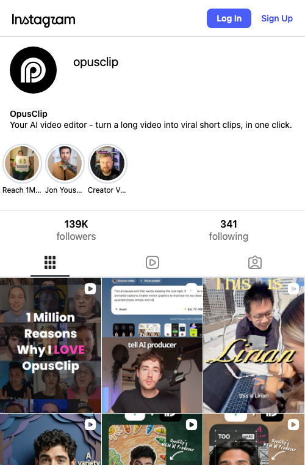
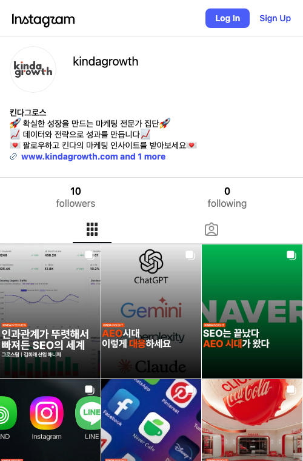

이번 주 12건 출고
손 댄 시간 0분
우리 프로필만 놓으면 잘 만든 건지 판단이 안 된다. 그래서 실제 경쟁 계정 화면을 그 자리에 가져와 나란히 놓고, 각 비교 끝에 우리 방향으로 결론까지 잇는다. 경쟁 화면은 headless 브라우저로 실제 프로필 URL을 열어 캡처한 실물이다(손 재현 아님). 비교·논평 목적.
직접 경쟁(숏폼 클리핑 리더 OpusClip)과 국내 done-for-you 대행사(킨다그로스)를 우리 프레임 왼쪽에 나란히 뒀다. 우리 프레임은 확정 bio(wiki/marketing/channels/instagram.md §2)와 계획된 그리드 콘텐츠로 구성한 목업이고, 오른쪽 둘은 2026-08-27 실제 프로필 캡처다.


실물 캡처에서 읽어낸 경쟁 문안과 우리 확정값을 한 줄에 대조. 경쟁 문안은 캡처 원문 그대로, 우리 값은 naming.md §2·channels/instagram.md §2 확정값.
| 항목 | OpusClip | 킨다그로스 | OSMU 팩토리 (우리) |
|---|---|---|---|
| 표시 이름 | OpusClip | kindagrowth / 킨다그로스 | OSMU 팩토리 |
| 핸들 | @opusclip | @kindagrowth | @osmu.official (1순위) |
| 프로필 이미지 | 검은 원 P 모노그램 | 워드마크 로고 | 씰+체크 "출고 완료 도장" (얼굴 비노출) |
| 바이오 축 | 기능 한 문장 ("long video → viral clips, one click") | 정체 선언 + 인사이트 구독 유도 ("전문가 집단 · 성과를 만듭니다") | 정체 + 하는 일 + 메타 증명 + 그라운딩 + CTA (4줄) |
| 차별 후킹 | "one click" 속도 | "데이터·전략" 권위 | "이 계정도 이 공장이 굴림" (살아있는 데모) |
| 톤 | 제품 카피, 크리에이터 친화 | B2B 전문가체 | 공장 출고 리포트체 (담백·숫자) |
TikTok은 headless 브라우저에 CAPTCHA(퍼즐 슬라이더) + 봇 차단을 띄워 실제 프로필 렌더에 실패했다. 손으로 재현하지 않고(가짜 금지) 특정한 핸들과 웹 조사 기반 관찰만 남긴다.
tiktok.com/@opusclip·@sabrina_ramonov 접근 시 회전 이미지 퍼즐 CAPTCHA + "Something went wrong" 스켈레톤. ADR-004(Meta 자동 운전 금지)와 별개로, TikTok은 headless 세션 자체를 차단. 로그인·CAPTCHA 수동 해제가 필요해 이번 배치에서는 미수집.
@blotato는 무관한 개인 셀피 계정, 7팔로워). 실제 유통은 창업자 @sabrina_ramonov TikTok 중심 — "500K+ followers in 6 months, 50M+ views", faceless video factory 소구. 크리에이터 얼굴+개인 브랜드가 유통 엔진.직접 경쟁(OpusClip·Blotato·Postiz)의 활성 Threads 프로필이 확인되지 않아(IG 자동 연동만 존재하거나 미운영) 나란히 놓을 실물이 없다. 우리 확정 bio·고정글(channels/threads.md §2·§3)만 프레임으로 두고, 방향은 IG 벤치마크에서 파생한다.